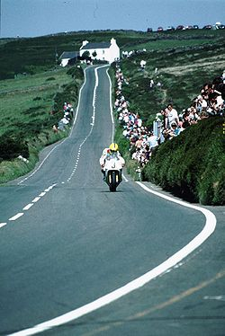

El TT Isla de Man, Tourist Trophy, International Isle of Man Tourist Trophy, Isle of Man TT y/o Manx TT es una competición motociclística internacional
que se celebra desde el año 1907 en la isla de Man,sobre carreteras cerradas al tráfico (Ruta de la montaña Snaefel).
La carrera se realiza en formato contrarreloj
.Es considerada como una de las competiciones de motor más peligrosas de todo el mundo, con más de 260 víctimas fatales.

1992: Joey Dunlop sobre su Honda RC30
La carrera de la clase mayor se denomina Senior TT. Allí competían motocicletas de Gran Premio de hasta 500 cm³, hasta que en 1985 se adoptó el reglamento TT Fórmula 1 y en 2005 las Superbikes de 1000–1200 cm³.
En el Senior TT se han destacado Mike Hailwood con siete victorias, John McGuinness con seis y Giacomo Agostini con cinco.
Las demás clases son Superbikes TT (1000–1200 cm³), Superstock TT (1000–1200 cm³), Supersport TT (600–750 cm³), Lightweight (actualmente Supertwin) TT (650 cm³) y Sidecar TT (600 cm³).
En 2010 se creó la clase TT Zero, para motocicletas eléctricas.
La primera carrera tuvo lugar el 28 de mayo de 1907 sobre un recorrido de 10 vueltas a un circuito de unos 25,5 kilómetros.
El vencedor de esta primera edición en la categoría de un cilindro (y a la vez ganador total) fue Charlie Collier, que pilotando una Matchless realizó el recorrido en 4 horas, 8 minutos y 8 segundos, logrando una velocidad media de 61,5 km/h.
El vencedor en la categoría de dos cilindros fue Rem Fowler, que pilotando una Norton con motor Peugeot completó el circuito en 4 horas, 21 minutos y 52 segundos, por lo que obtuvo una velocidad media de 58,3 km/h.
El trofeo otorgado al ganador de esa primera edición fue donado por el marqués de Mouzilly, y representa al dios Hermes.
El trofeo actualmente le es otorgado al vencedor de la categoría Senior.
En la actualidad (2019) se considera una de las carreras más veloces y peligrosas del motociclismo, con más de 250 muertos a través de su historia y con promedios de velocidad superiores a los 200 km/h (por ejemplo, 208 km/h por John McGuinness en la categoría Senior) y velocidades pico de 332 km/h.
Lightweight: Actualmente las motocicletas que conforman dicha categoría son las "Super-Twin", que tienen como especificaciones principales el ser refrigeradas por líquido, ser de 2 cilindros y no tener una cilindrada mayor que 650 cm³. Superstock: Básicamente motos de serie, con pequeñas modificaciones en la suspensión y en la parte final de los escapes (suelen ser de 1000 cm³). Supersport: Motos más modificadas que las superstock, con modificaciones a nivel de los escapes completos y suspensión delantera. Los motores deben seguir las siguientes especificaciones:
| # | Piloto(s) | Victorias |
|---|---|---|
| 1 | Michael Dunlop | 28 |
| 2 | Joey Dunlop | 26 |
| 3 | John McGuinness | 23 |